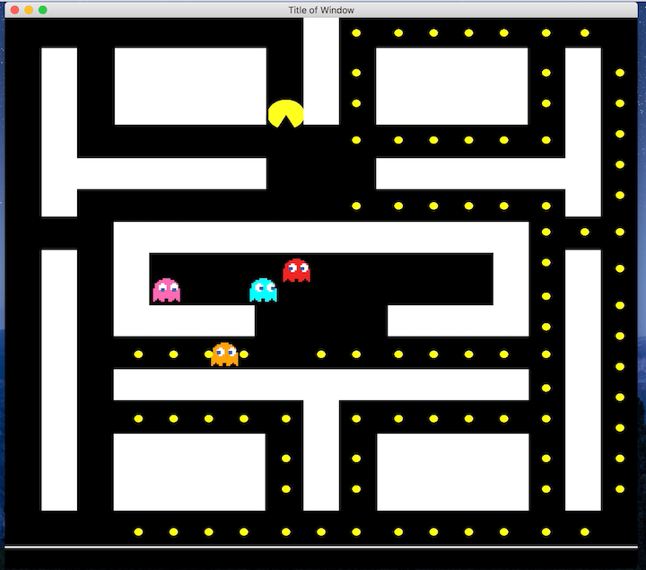
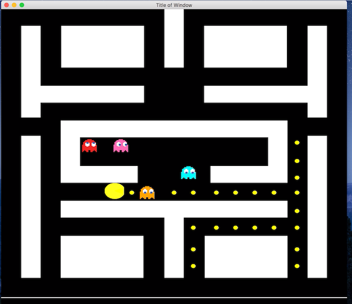

Pacman Game


Discription
- Designed and implemented an Object Oriented Program using C++ and SFML for graphics, that allows the user to play the first level of PacMan
- Developed intricate functions that displayed the main menu, game board, PacMan’s mobility and ghosts with AI attributes
Tools
- C++
- SMFL Library API
- Xcode